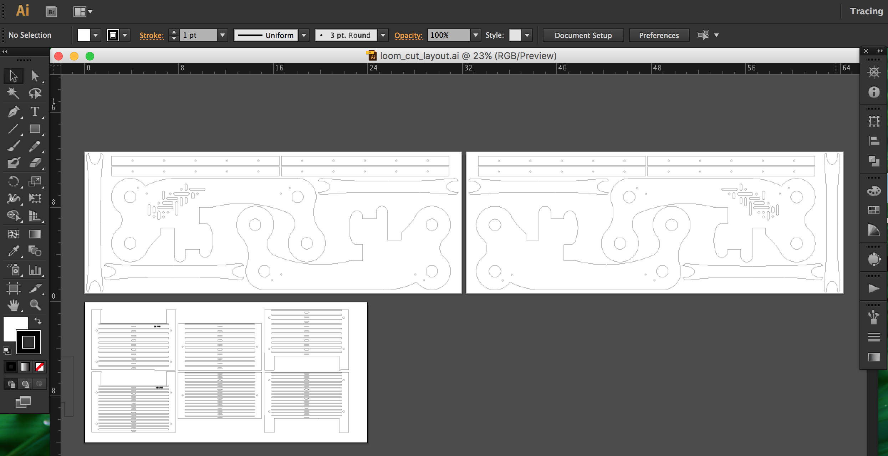
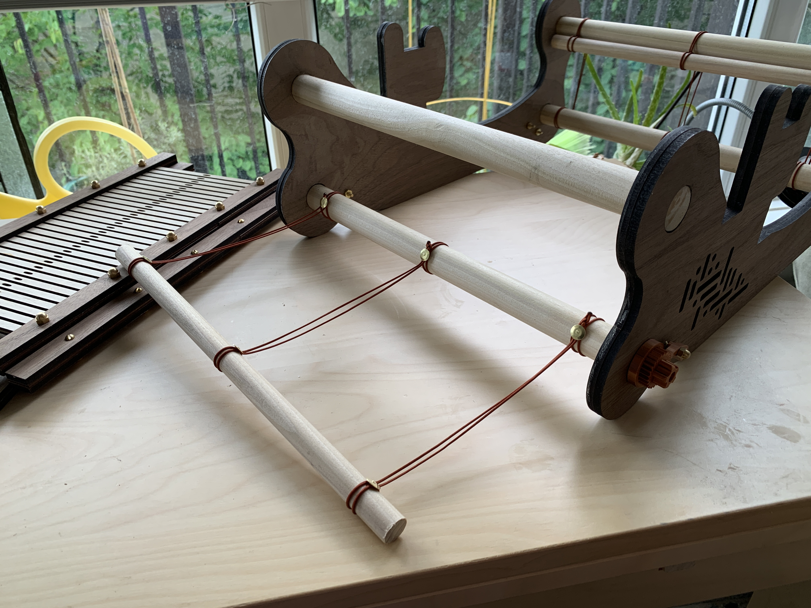

A8: Final Project: Rigid Heddle Loom
by Kellie Dunn for HCDE 598
For the final project, I designed and built a rigid heddle loom.
I liked the idea of using modern fabrication tools to create an ancient fabrication tool! I am a beginner at weaving, but I have a deep history creating and working with textiles and soft goods, so it's a medium that makes sense to me.

Designing the Loom Frame
I researched styles of rigid heddle looms and based my design on existing ideas. I took a lot of inspiration and information from this laser cut loom instructable, but I wanted to make something that also looked beautiful, not just utilitarian. I decided to draw my own frame based on the basic shapes I saw in the research, changing some parts of the design, simplifying some of the pieces into shapes I found more elegant, and incorporating affordances for some custom hardware that I could create on a 3D printer in addition to the stock parts from the hardware store.I modeled the loom frame in Onshape, and made an assembly of the parts, incorporating some stock parts I downloaded CAD versions of from McMaster-Carr.
I added some embellishment in the form of a weaving-inspired cutout motif, just for fun.


Designing the Ratchet Mechanism
For the ratchet and pawl mechanisms, I borrowed a CAD file that someone else created of a basic ratchet gear, and modified it in Onshape to include a base disc underneath and a grippy knob on top. I made my own pawl arm piece that would accommodate a small spring and two fasteners.
I bought some metallic copper colored PLA filament because I thought it would look cool with the wood, and 3D printed a test of my ratchet and pawl.

I assembled the mechanism on a piece of cardboard to test it and figure out where I needed to set the holes for the fasteners in my frame. I made a few adjustments to the pieces (bigger base, taller knob, adjusted the lengths of the base cylinders on the pawl) and then 3D printed 4 of them (two with clockwise motion and two with counterclockwise motion.)
Video of ratchet test here
Designing the Heddle

I created the heddle pieces parametrically in Rhino/Grasshopper, so that I can resize the file to any ratio of dents per inch (or, in this case, dents per 10cm, since I made all of my pieces metric). My loom accommodates a 30cm wide heddle, which I designed in 3 separate pieces that are sandwiched between top and bottom bars, fastened with some stock parts.
video of grasshopper file here
I laser cut the heddle sections out of 3mm birch plywood I had left over from a previous project. The birch plywood and the light colored dowels give my loom a nice 2-tone wood effect. I decided to make 20/10 and 30/10 heddles to start with, but I could cut new ones at any point in the future if I wanted them.
Cutting the Parts
The frame of the loom, the top and bottom edges of the heddles, and the shuttle are laser cut out of 5mm walnut veneer plywood that I bought from Crosscut Hardwoods. The reed parts of the heddles are cut from 3mm birch plywood I had left over from a previous project. I arranged my cutting layout in Adobe Illustrator. I had enough wood to cut 4 of the frame pieces, to make the frame a little more sturdy, so I put my decorative weaving motif cutout on the outside pieces and left the inside pieces solid to get a recessed look as if it had been milled.

I used blue painters tape on the plywood to prevent scorch marks from the laser cutter.

Video of laser cutting here
On the laser cutter, I used the following settings:
For the 5mm walnut plywood: speed 3, power 100, freq 50
For the 3mm birch plywood: speed 8, power 100, freq 50
Stock Parts
Once I sorted out what I needed in terms of fasteners and hardware, I went to Stoneway Hardware and found what I needed in brass because I thought it would look nicer.

list of stock parts goes here
Construction
I glued the pieces together, using the dowels to line them up, and got some help from The Bard keeping them flat while they dried.

After cutting, I glued the top dowels in and finished the walnut veneer with paste wax. In hindsight, I would make a more secure/stable way to attach the dowels.
Finally, I added the apron bars with nylon cord and brass tacks, following the directions on the instructables tutorial I mentioned above.

Warping the Loom
It turns out, setting the warp strings on a loom you just built is the most thorough way to find out everything that's wrong with how you built it. If you are new to warping looms (like I am) I highly recommend learning this on a loom built by someone else who knows what they're doing...! I found all of the problems: the structure wasn't strong or stable enough (it needs another support beam in the middle to keep it from skewing under tension), the dowels didn't turn as smoothly as they should because screws were in the way (I reversed the screws and this solved this problem), the loom needs a bottom section that can be clamped to a table (this could combine with the support beam that it needs)... Warping this loom took way longer than I expected and it was pretty frustrating.

The heddle design also needs some work, the heights aren't quite right and while it works, it could be easier to use if it was corrected. There are a few different ways to solve this and the simplest might be to shorten the width of the side tabs on the heddle bars, and add some brackets to the inside of the loom sides so that it can move lower. I would also like to redesign the shuttle so that it's easier to thread through the shed. Future plans!
Documentation for Assignment 1:
Onshape file
Illustrator file
3dm Rhino file
STL file for 3D print
Grasshopper file
Acknowledgements:
acknowledgements list goes here!